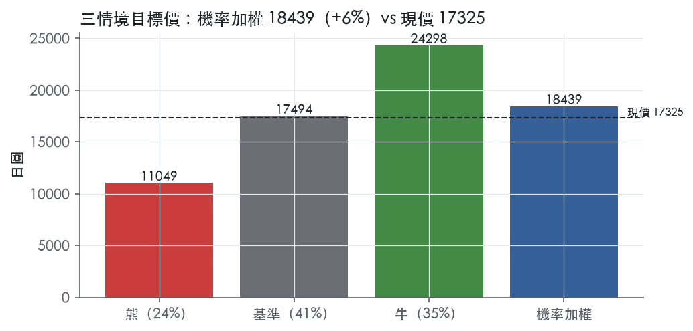
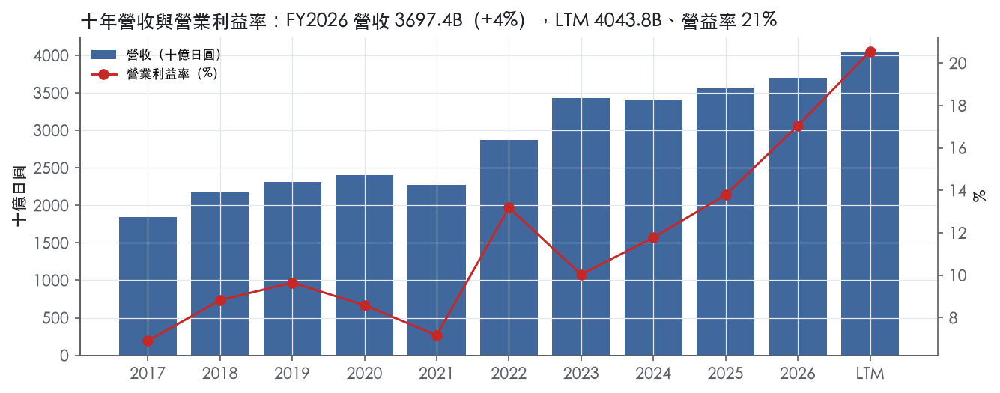
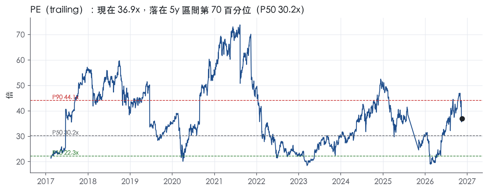
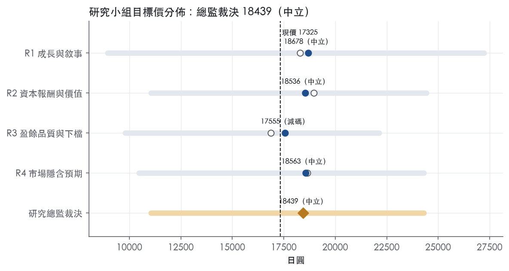
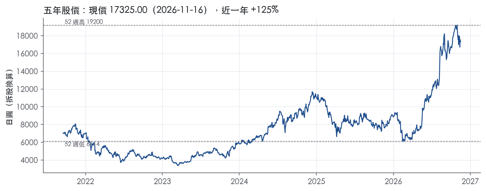

評等總表 › 未分類 › 6098.T
盈餘升級已入價，中性｜評等 中立｜目標價 18439
| 報告日 | 評等 | 目標價 | 當時股價 | 超額報酬 |
|---|---|---|---|---|
| 2026-11-16 | 中立 | 18,439 | 17,325 | -1.3% |
| 評等 | 中立 |
| 12 個月目標價 | 18439 日圓 |
| 現價 | 17325.00 日圓（2026-11-16） |
| 預期報酬 | 股價 +6.4%＋股息 0.1%＝總報酬 +6.6%；日股門檻 7.8%，超額 -1.3% |
| 估值方法 | P/E 31.0x，套在第 5–8 季的EPS（也就是一年後的未來四季） |
| 三情境 | 熊 11049／基準 17494／牛 24298 |
| 研究流程 | 四位研究員兩輪辯論＋研究總監裁決 |
| 資料來源 | EDINET、TDnet、J-Quants、Yahoo、FRED（全免費） |
盈餘升級已入價，中性（研究總監裁決，四位研究員兩輪辯論後）
評等 中立｜12 個月目標價 18439 日圓（總監三情境機率加權 18329 與研究員中位數 18550 各半）｜現價 17325.00（2026-11-16）
預期報酬：股價 +6.4%＋股息 0.1%＝總報酬 +6.6%。日股門檻 7.8%，超額 -1.3%。
估值方法：P/E 31.0x，套在第 5–8 季的EPS（也就是一年後的未來四季）。三情境：熊 11049（24%）／基準 17494（41%）／牛 24298（35%）。
什麼會讓研究總監改變看法：FY2028Q1 HR Tech 美國日圓營收年增仍在 18% 以上且 Indeed 美國求人數回升，y2 上調到 9%、倍數到前瞻帶 P75 轉多；US ARPJ 年增跌破 15% 或 FY2027Q3 營益率低於去年同季 19.3%，熊機率上調轉空。
| 過去四季（實際，FY2027Q2） | 未來四季 | 第 5–8 季 | 第 9–12 季 | |
|---|---|---|---|---|
| 營收（B） | 4,043.8B | 4,407.7B | 4,694.2B | 4,975.9B |
| 營收成長 | 13.8% | 9.0% | 6.5% | 6.0% |
| 營業利益率 | 20.5% | 22.0% | 21.5% | 21.0% |
| EPS（日圓） | 468.95 | 535.61 | 564.32 | 591.45 |
| EPS 成長 | 57.8% | 14.2% | 5.4% | 4.8% |
| 每股股息（日圓） | — | 0.00 | 0.00 | 0.00 |
| P/E（現價） | 36.9x | 32.3x | 30.7x | 29.3x |
| 股息殖利率（現價） | 0.1% | — | — | — |
過去四季為申報數字；預測為研究總監的假設、程式計算。倍數與殖利率都用現價計算，用來看現價對應各期獲利的高低。
| 情境 | 機率（歷史） | 故事 | 未來四季營收成長 | 第 5–8 季營益率 | 倍數 | 目標價 | 股價漲跌 |
|---|---|---|---|---|---|---|---|
| 熊 | 24%（25%） | 風險表第 1 條：美國招聘由停滯轉下滑（本行下行路徑失業率 5.1），漲價遭抵抗、派遣工時下滑、營運槓桿反向；第 2 條公取委處分為加重項，上限在派遣 EBITDA+S 55.1B 量級；倍數貼前瞻帶 P25 | 8.0% | 18.5% | 24.0x | 11049 | -36.2% |
| 基準 | 41%（41%） | 下半期小幅超越 HR Tech 指引，FY2028 上半期對 ARPJ +37% 高基期與日圓 153 降速，營益率 22% 小幅回吐至 21.5%，FY2028 保守計畫使倍數小幅壓縮至 31x | 9.0% | 21.5% | 31.0x | 17494 | 1.0% |
| 牛 | 35%（35%） | US ARPJ 貨幣化延續且美國招聘量在本行上行路徑回升，抵銷日圓 145 換算逆風，FY2028 計畫維持美國日圓雙位數成長，倍數升至前瞻帶 P75 上方 | 13.0% | 24.0% | 36.0x | 24298 | 40.2% |
目標價由程式依研究總監的驅動與倍數計算；機率由研究總監給定。括號內是歷史頻率：把這檔股票過去十年 12 個月報酬的波動形狀，置中在基準情境，結果落在各情境附近的比例。

四位研究員用不同方法各自估值，回應研究總監的質疑後交出第二輪，最後由總監逐點裁決。各研究員的主張見第七章，裁決理由見第八章，完整論證見《研究底稿》。
| 立場（一輪→二輪） | 加權目標價（一輪→二輪） | 評等（一輪→二輪） | 第二輪倍數 | 熊～牛目標價 | |
|---|---|---|---|---|---|
| R1 成長與敘事 | 中性→中性 | 18282→18678 | 中立→中立 | 31.0x | 8944～27230 |
| R2 資本報酬與價值 | 中性→中性 | 18958→18536 | 中立→中立 | 31.0x | 11049～24434 |
| R3 盈餘品質與下檔 | 中性→看空 | 16868→17555 | 減碼→減碼 | 30.0x | 9794～22131 |
| R4 市場隱含預期 | 中性→中性 | 18641→18563 | 中立→中立 | 31.0x | 10469～24298 |
| 研究總監裁決 | 中性 | 18439 | 中立 | 31.0x | 11049～24298 |
目標價由程式依各自的驅動與倍數計算；評等＝機率加權總報酬 − 日股門檻。
Recruit Holdings 是一家以人力媒合科技為核心、跨足人才派遣與日本本地生活服務媒合平台的集團，透過 HR Technology、人材派遣、Marketing & Matching Technology 三個戰略事業單位（SBU）連結個人用戶與企業客戶。公司自 1960 年在日本大學報紙刊登企業招聘廣告起步，現在的定位是運用科技與數據提升媒合效率與速度，向全球個人用戶提供最適選擇，並協助企業客戶提升營運效率。集團旗下包含 Indeed、Glassdoor 等全球求職平台，以及日本國內 SUUMO、HotPepper Beauty、じゃらん 等垂直媒合平台與 Air 系列商家 SaaS 工具。FY2026 年度合併營收 3,697.35B 日圓，過去十年營收複合成長主要靠 Indeed／Glassdoor 全球招聘平台擴張與日本國內媒合事業的數位化滲透帶動。
三個 SBU 的規模與成長方向差異明顯，HR Technology 是目前成長最快、利潤率提升最明顯的引擎。以最新半期（FY2027 中間期，2026 年 4–9 月）決算短信揭露的分部數字看：HR Technology 事業營收 945.5B 日圓，年增 35.6%；人材派遣事業營收 917.5B 日圓，年增 10.6%；Marketing & Matching Technology（MMT）事業營收 291.4B 日圓，年增 3.6%。三者合計約占集團中間期總營收 2,140.0B 日圓（19.3% 增）的絕大部分，HR Technology 占比約四成四、人材派遣約四成三、MMT 約一成四。
HR Technology 事業由 Indeed、國內人才紹介服務及其他相關事業組成，核心是全球最大求職網站 Indeed 與企業評論平台 Glassdoor，擁有超過 665,000,000 筆求職者檔案、每年約 3,500,000 家企業客戶使用，平台上刊登的職缺超過 20,000,000 件。日本市場則透過 Indeed PLUS 把 リクナビNEXT、タウンワーク 等集團內外的求人網站與應徵管理系統（ATS）串接，可觸及國內主要求人網站使用者的最多約七成。該分部獲利能力最強，中間期 EBITDA+S 利潤率達 47.5%、EBITDA+S 達 449.2B 日圓，年增 76.7%。
人材派遣事業涵蓋日本與歐洲、美國、澳洲，提供事務職、製造／輕作業及各類專職派遣服務，收入模式是依派遣人員實際工時持續計入營收，而非一次性媒合費。這個分部規模與 HR Technology 相近但利潤率明顯偏低，中間期 EBITDA+S 利潤率僅 6.0%，EBITDA+S 為 55.1B 日圓，年增 0.9%，顯示派遣業務本質上是人力密集、低毛利的規模生意。
MMT 事業主要在日本經營美容、旅行、餐飲、SaaS 構成的生活風格（Lifestyle）領域、住宅領域及汽車、婚禮、教育等其他領域，代表品牌包括美容的 HotPepper Beauty、旅行的じゃらん、餐飲的 HotPepperグルメ、住宅的 SUUMO。收費模式以「期待行動數方案」為主，美容領域自 2026 年 1 月起開始導入依流通交易總額（GMV）計費的「GMV連動模式」。中間期生活風格領域營收 161.5B 日圓、年增 9.8%，為 MMT 內成長最快的子領域；住宅領域營收 76.0B 日圓、年減 0.1%；其他領域營收 53.7B 日圓、年減 7.3%。MMT 整體 EBITDA+S 利潤率 31.4%，EBITDA+S 為 91.4B 日圓、年增 1.9%，獲利結構介於 HR Technology 與人材派遣之間。
研發費用方面，FY2026 年度研發支出 145.9B 日圓，主要是新產品開發及既有產品技術升級的工程師人力成本，大部分與 HR Technology 事業相關。FY2026 年度資本支出合計 87.8B 日圓，其中 HR Technology 10.0B 日圓、人材派遣 22.3B 日圓（主要是租賃更新與軟體取得）、MMT 55.5B 日圓（主要是軟體開發取得）。
Recruit 的客戶結構是「雙邊市場」：一邊是求職者／消費者個人用戶，一邊是刊登職缺或提供商品服務的企業客戶，HR Technology 與 MMT 皆靠此雙邊網路效應運作。地理上，HR Technology 事業已是全球化佈局，中間期美國市場營收 551.8B 日圓、年增 45.5%（日圓計 3.46B 日圓、年增 33.4%），歐洲及其他地區營收 202.2B 日圓、年增 40.5%（日圓計 1.26B 日圓、年增 28.8%），日本市場營收 191.4B 日圓、年增 9.8%（日圓計 1.20B 日圓、年增 0.6%）。美國市場的成長主要來自「美國平均單價」（US ARPJ）年增 37%，而非招聘需求擴張，公司明確說明美國招聘需求當期是停滯的，這代表 HR Technology 美國營收成長目前靠漲價／變現率提升支撐，而非量的擴張。
人材派遣事業的地區分布是日本與歐美澳並重，中間期日本派遣營收 437.1B 日圓、年增 3.5%，歐洲、美國及澳洲合計營收 480.4B 日圓、年增 18.0%，海外派遣成長明顯快於日本本土。派遣業務本質上是地域化生意，因為派遣人員傾向在居住地附近就業，所以集團在各地設營業據點做在地媒合，並以「單位經營」（ユニット經營）模式授權各地單位自訂策略追求利潤最大化。
MMT 事業幾乎完全是日本本土生意，透過「リクルートID」累積 98,650,000 個帳戶，連結約 980,000 家企業客戶。個人用戶跨領域使用媒合平台的交叉使用率（クロスユース率）超過四分之三，顯示集團透過會員積分制度把美容、旅行、餐飲、住宅等垂直領域用戶黏住在同一個會員體系裡。個人用戶行動數（預約、詢問、資料申請等）從 FY2017 的約 190,000,000 件成長到 FY2025 的約 400,000,000 件，顯示平台使用密度持續上升。通路上，HR Technology 的 Indeed PLUS 是集團內部打通自家求人網站與外部 ATS 的關鍵基礎設施，等於是把日本國內多品牌求人網站的流量集中導入 Indeed 的媒合引擎。
公司最近四季（FY2026Q3 至 FY2027Q2）營收與營益率呈加速改善的軌跡，由 HR Technology 日圓計價營收的變現率提升驅動。FY2026Q3（截至 2025 年 12 月）營收 943.20B 日圓、年增 5.2%，營益率 19.3%（is/dv 對應 FY2026Q3 列）；FY2026Q4（截至 2026 年 3 月）營收 960.57B 日圓、年增 11.5%，但營益率回落至 14.0%（對應 FY2026Q4 列）。進入 FY2027 年度後動能明顯加快：FY2027Q1（截至 2026 年 6 月）營收 1,045.35B 日圓、年增 18.9%，營益率回升至 24.4%；FY2027Q2（截至 2026 年 9 月）營收 1,094.65B 日圓、年增 19.7%，營益率 23.6%（對應 FY2027Q1、FY2027Q2 列）。LTM 至 FY2027Q2 的營收為 4,043.76B 日圓、EBITDA 937.93B 日圓、自由現金流 812.66B 日圓。
決算短信把 FY2027 中間期（2026 年 4–9 月）合併表現講得很直白：營收年增 19.3% 至 2,140.00B，HR Technology、人材派遣、MMT 三個事業全部增收；營業利益年增 63.9% 至 513.74B；稅前中間利益年增 63.5% 至 528.02B；歸屬母公司中間利益年增 65.7% 至 411.63B；基本每股中間利益年增 71.0% 至 296.01 日圓。EBITDA+S 利潤率 27.6%，EBITDA+S 年增 49.7% 至 590.8B 日圓。利潤成長速度遠超營收成長，顯示營運槓桿在這個半年明顯打開，主要貢獻來自 HR Technology 美國業務單價提升同時控制人事費用。
對於下半年及全年展望，公司在 2026 年 11 月的決算短信中表示：全年合併業績預測維持 2026 年 8 月 7 日發布的數字不變；HR Technology 事業上半年實績優於原先假設，且預期該趨勢延續至下半年，因此 HR Technology 全年業績可能優於 8 月時的展望，但對集團合併業績預測的影響有限。下半年假設匯率為 1 日圓兌 156 日圓，相較於資料包中 2026 年 11 月 6 日的即期匯率 158.23，日圓實際走勢略弱於公司假設，對出口型收入（日圓計價轉換為日圓）是正面意外。公司最新一期全年計畫為營業利益 945.00B 日圓、歸屬母公司淨利 755.00B 日圓、每股盈餘 543.00 日圓（company_forecast,決算短信 2026-11-11 摘要頁）。以中間期已實現營業利益 513.7B 日圓計算，已完成全年計畫逾半，若下半年動能不墜，全年實績超越公司計畫的機率偏高，這也符合日股公司普遍期初計畫保守、實際常上修的慣例。
資本回報方面，中間期庫藏股買回支出為 182.0B 日圓，顯示公司持續以買回而非股息作為主要股東回報手段，這與資料包揭示的股息率僅 0.1%（trailing 倍數欄）一致。
公司把長期經營指標設定為 EBITDA+S，並將其達成度與高階主管薪酬連動，以此促進股東與管理層利益一致。集團整體成長戰略分為三大支柱：Simplify Hiring（簡化招聘）、Help Businesses Work Smarter（協助企業更聰明經營）、Prosper Together（與利害關係人共存共榮）。
Simplify Hiring 的核心是把求人廣告及招募工具市場、人材紹介市場、Executive Search 市場、招募自動化市場與人材派遣市場視為統合的「人材媒合市場」，公司估計 2025 年全球規模約 3,020 億日圓。Indeed 透過 AI 與機器學習優化媒合，公司揭露 2025 年 Indeed 平台上每分鐘平均成功媒合採用人數為 31 人，作為衡量招聘流程效率化進度的指標；美國市場「採用所需天數」中位數在 2025 年 12 月為 30 天，較 2024 年 12 月增加 6 天，公司歸因於美國宏觀經濟環境影響，但同時強調付費方案（如 Premium Sponsored Jobs）可將採用所需天數縮短 50%。
Help Businesses Work Smarter 由 MMT 事業推動，策略是透過媒合平台與 Air 系列商家 SaaS 構築的生態系，支撐企業客戶從集客、預約管理到結算的全流程數位化，並逐步從「期待行動數方案」過渡到依 GMV 計費的「GMV連動模式」。Prosper Together 則是公司的 ESG 框架，目標在 FY2031 年度前累計協助 30,000,000 名面臨障礙的求職者就業，截至 FY2026 年度已累計實現約 18,800,000 人次。
整體看，Recruit 目前的獲利引擎集中在 HR Technology 的美國單價提升，這是全球招聘需求偏弱環境下靠漲價支撐成長的模式，可持續性要看企業客戶對更高單價的接受度與競品定價行為。人材派遣事業利潤率結構性偏低，更像現金流穩定器而非成長引擎；MMT 事業的 GMV 連動模式若能順利從美容領域擴展到其他垂直領域，有機會在不增加行銷支出的前提下提升變現效率。公司全年計畫相對上半年實績偏保守，加上公司自己承認下半年匯率假設與營運趨勢可能帶來正面意外，全年業績上修的空間值得留意。

Recruit 的護城河評為窄、趨勢穩定。Indeed 與日本 MMT 平台的雙邊網路效應確實存在，但集團有相當大比重的營收來自沒有護城河的人材派遣，加上生成式 AI 可能改變求職與消費搜尋的入口，我們沒有把握超額報酬能維持 10 年以上。量化底稿顯示 ROIC 在有資料的年度全數高於資本成本，單看歷史數字足以支撐寬評級；我們下修評級是基於前瞻風險，而非歷史表現。
主要來源是網路效應，其次是 MMT 對中小商家的轉換成本，以及品牌與專有資料構成的無形資產；成本優勢與效率規模證據不足，不列入。
看得到，而且數字比窄評級所需的更強，這是本章最大的衝突點。ROIC 十年平均 34.1%、最低 18.1%，有資料的 9 年全數高於資本成本代理值 10.1%，平均利差 24.0%。這個代理值以美國 10 年債加 5% 計算，對日圓計價的公司偏嚴，所以檢驗結果屬於保守。
穩定性則不及格。ROIC 標準差 12.4%；營業利益率平均 10.7%、標準差 3.1%；營收成長標準差 9.9%、最低 -5.4%。這組數字顯示獲利明顯跟著招聘景氣循環波動。毛利率從最低 46.7% 升到最新 59.2%，反映的是業務組合往 HR Technology 移動，屬於趨勢變化，不能當成穩定性的證據。最新 ROIC 58.2% 是十年最高，部分來自輕資產結構與漲價，不宜直接外推。
我們維持窄、不升寬的理由是：過去十年的數字產生在 Indeed 搜尋入口地位未受挑戰的時期，未來十年的入口結構可能改變。
最大威脅是 AI 改變求職者與消費者取得資訊的方式，讓 Indeed 與 MMT 平台的流量和議價力被繞過。公司自己也寫到，必須因應 AI 普及所帶來的資訊蒐集與比較行為改變。
其次是媒合效率指標轉弱。Indeed 上「採用所需時間」的中位數在 2025 年 12 月為 30 天，比 2024 年 12 月增加 6 天，公司把美國總經環境列為原因之一。這個指標若持續惡化，企業付費的理由會變弱；在招聘需求停滯期持續漲價，也會促使客戶多平台並用或轉向替代通路。
第三，MMT 從「期待行動數方案」改為依 GMV 計費的模式，若商家認為抽成過高，可能出現去平台化。最後是法規：公司承認在 AI 媒合領域可能存在法律規範。
相對於人材派遣與線上招聘同業，目標倍數應給予溢價，理由是 ROIC 對資本成本的利差長期為正且幅度大，Indeed 與 MMT 的網路效應有實證支撐。由於評級是窄，溢價只應反映約 5 年的超額報酬期，之後要假設利差收斂，不能用永續高 ROIC 撐倍數。目前 P/E 位於 5 年分位 70.4%，EV/Sales 位於 96.2%，市場已經接近反映寬護城河的情境，估值研究員不宜再以高於 5 年 P90 的倍數設定目標。
| 指標 | 最新 | 十年平均 | 標準差 | 最低 | 最高 |
|---|---|---|---|---|---|
| ROIC | 58.2% | 34.1% | 12.4% | 18.1% | 58.2% |
| 毛利率 | 59.2% | 53.9% | 4.7% | 46.7% | 59.2% |
| 營業利益率 | 17.1% | 10.7% | 3.1% | 6.9% | 17.1% |
| FCF 利潤率 | 16.4% | 10.7% | 3.8% | 4.1% | 16.4% |
| ROE | 31.0% | 20.6% | 4.8% | 12.6% | 31.0% |
程式計算。資本成本代理值（10 年債＋5%）：10.1%；ROIC 平均減資本成本：24.0%；ROIC 有資料的 9 年中，高於資本成本 9 年。
營業現金流／淨利 LTM 1.32x、近三年平均 1.45x、十年平均 1.59x，三個窗口全部站在綠燈門檻（≥1.00x）之上。自由現金流／淨利 LTM 1.23x、近三年 1.29x、十年平均 1.23x，同樣全綠，顯示扣掉資本支出後盈餘仍有現金支撐。應計比率（(淨利−CFO)／平均總資產）LTM 為 -7.1%，近三年 -6.4%，十年平均 -6.1%，全部是負值，代表帳上淨利長期比實際現金流保守，不是靠應計項目堆出來的盈餘。 拉回最新一期財報對照：中間期（FY2027 上半年）營業活動によるキャッシュ・フロー為 466,525M，税引前中間利益為 528,017M，親會社所有者に帰属する中間利益為 411,633M；前中間期営業CF為 266,210M、親會社利益為 248,380M，兩期都是現金流金額高於或貼近淨利金額，方向與量化底稿的綠燈一致。十年期年度表上 CFO 與 FCF 從 FY2017 的 142.16B／74.54B 一路成長到 FY2026 的 669.43B／607.14B，期間沒有任何一年出現現金流倒退而淨利繼續上升的背離（資料包年度表）。
公司的核心調整指標是「EBITDA+S」（EBITDA 加回股份報酬），FY2026 全年 EBITDA+S 為 794.3B、EBITDA+S マージン 21.5%，較 FY2025 成長 17.0%；中間期（FY2027H1）EBITDA+S 為 590.8B、マージン 27.6%，較去年同期成長 49.7%。股份報酬本身中間期為 42,790M（前中間期 35,814M），年增約兩成以上（決算短信現金流量表數字）——這是真實的股東稀釋成本，我認為應完整計入估值基礎、不應像公司指標那樣加回。HRテクノロジー事業單獨拆分美國平均單價成長率（US ARPJ）作為非財務KPI，中間期美國平均單價成長率達 37%，是美國區段營收年增 45.5%（至 551.8B）的主要驅動力，這屬於營運揭露而非會計調整，但投資人要注意這個單價指標的永續性決定了 HR 事業的盈餘品質能否延續。公司沒有在新聞稿列出重組費用、商譽減損等一次性項目的非 GAAP 調整，中間期其他營業費用僅 5,457M（去年同期 20,881M），下降顯示沒有大額一次性費損拖累本期。
淨負債為 -872.21B（即淨現金），EV 23,868.51B（資料包快照）。淨負債／EBITDA LTM 為 -0.93x、近三年 -1.50x、十年平均 -1.22x，全部是淨現金狀態。利息保障倍數 LTM 76.7x、近三年 39.7x、十年平均 129.6x，遠高於綠燈門檻 8.00x，付息能力完全沒有壓力。資產負債表上中間期末（2026年9月30日）現金及現金同等物為 872,842M，較上年度末 725,578M 增加；非流動負債中借入金僅 636M、租賃負債 122,145M，流動負債合計 829,128M、非流動負債合計 299,827M，整體負債結構以營運性負債與租賃為主、金融性借款極小。 公司的流動性備援包括：短期借款以銀行借入、CP或其組合籌資，中長期借款以銀行借入或公司債組合籌資，並設有上限 200.0B 的公司債發行登錄（當連結会計年度末未使用枠 200.0B）；中間期末當座貸越極度額合計為 113.0B 無借入實行餘額，另有總額 200.0B 的承諾額度（commitment line）及 300.0B 的非承諾額度（uncommitted line），均無提款餘額。 資本配置以庫藏股買回為主：FY2026 全年自己株式取得支出為 678.7B；中間期（FY2027H1）自己株式取得支出為 182.087B（182,087M），較前中間期 428.203B 明顯縮小。股利方面中間期支付配當金 17,452M，與前中間期 17,600M 大致持平。（股利＋回購）／淨利 LTM 僅 5.3%、近三年 8.6%，遠低於十年平均 23.9%，是黃燈——這反映最近一兩期回購金額相對暴增的淨利基數偏小，而非股東回饋政策轉弱，詳見紅旗說明。
稀釋股數年變動（LTM 0.2%，近三年平均 -3.9%，黃燈）：規則判定 LTM 稀釋股數較去年同期微增 0.2%，看似股數不減反增，但年度表顯示稀釋股數從 FY2022 的 1.64B 一路降到 FY2026 的 1.43B，十年趨勢持續淨減少（資料包年度表）。LTM 窗口落在 FY2027Q2，中間期的股份報酬發放與庫藏股處分（庫藏股処分で株剰余金16,124M、利益剰余金減少17,542M等股權結構調整）可能造成季度間的短暫淨股數波動（決算短信股東權益變動表），我判斷這是口徑雜訊、不是股東稀釋趨勢反轉。 （股利＋回購）／淨利（LTM 5.3%、近三年 8.6%，黃燈，規則門檻 ≥50% 綠）：表面上遠低於綠燈，但十年平均高達 23.9%，且分母淨利近兩年成長極快（FY2024 淨利353.65B→FY2026淨利496.91B，資料包年度表），回購金額的絕對值（FY2026 678.7B）其實遠高於多數早年，只是比率因為淨利基數膨脹而被壓低。這不是股東回饋縮水，而是淨利成長速度階段性超過回購金額成長速度，屬會計口徑／成長節奏造成的假警報，不是真問題。 除此兩項黃燈外，程式標出的其他項目（CFO／淨利、FCF／淨利、應計比率、淨負債／EBITDA、利息保障倍數）全部是綠燈，沒有未解釋的紅旗。SBC／營收欄位本系統顯示「—」（未計算），但從決算短信可知中間期股份報酬為 42,790M、佔中間期營收 2,139,998M 的比重偏低個位數百分比量級。
估值應以 GAAP／IFRS 認列數字為主軸、但要把股份報酬視為真實成本不加回，因為 EBITDA+S 這個公司自訂指標已經把 SBC 排除在費用外，會系統性高估經常性獲利能力。盈餘品質整體偏高：現金流連續多年覆蓋淨利、應計比率為負、淨現金資產負債表、利息保障倍數極高，不需要對 GAAP 盈餘做大幅折價，兩個黃燈都是可解釋的口徑雜訊，不構成系統性灌水證據。淨現金狀態也代表槓桿完全不限制估值倍數，EV/EBITDA、P/E 可以用當前的現金流與獲利能力直接支撐，不需因財務風險而額外打折。唯一要留意的是 HRテクノロジー事業美國平均單價（US ARPJ）成長率是近兩期盈餘加速的主要引擎，若單價成長率回落、EBITDA+S マージン的擴張動能會隨之減弱，這是對未來盈餘成長性的風險、而非對過去盈餘品質的質疑。
| 項目 | LTM | 近三年 | 十年 | 燈號 | 規則 |
|---|---|---|---|---|---|
| 營業現金流／淨利 | 1.32x | 1.45x | 1.59x | 綠 | ≥1.00x 綠、<0.80x 紅 |
| 自由現金流／淨利 | 1.23x | 1.29x | 1.23x | 綠 | ≥0.90x 綠、<0.60x 紅 |
| 應計比率（(淨利−CFO)／平均總資產） | -7.1% | -6.4% | -6.1% | 綠 | ≤0.0% 綠、>5.0% 紅 |
| SBC／營收 | — | — | — | — | ≤3.0% 綠、>8.0% 紅 |
| 淨負債／EBITDA | -0.93x | -1.50x | -1.22x | 綠 | ≤1.50x 綠、>3.00x 紅 |
| 利息保障倍數（營業利益／利息） | 76.7x | 39.7x | 129.6x | 綠 | ≥8.00x 綠、<3.00x 紅 |
| 稀釋股數年變動 | 0.2% | -3.9% | 0.1% | 黃 | ≤0.0% 綠、>3.0% 紅 |
| （股利＋回購）／淨利 | 5.3% | 8.6% | 23.9% | 黃 | ≥50.0% 綠、<0.0% 紅 |
程式計算；燈號以 LTM（無則近三年平均）判定。
| 風險 | 觸發指標（看什麼數字、在哪裡看） | 對 EPS 的影響方向與粗略幅度 | 未來 12 個月發生機率（高／中／低） | 出處 |
|---|---|---|---|---|
| 美國招聘需求轉弱侵蝕 HR Technology 營收與利潤 | 決算短信每季披露的「米国平均単価成長率（US ARPJ）」、美國 Indeed 求人總數、美國分部營收年增率 | 負向，大：HR Technology 中間期 EBITDA+S 占集團 EBITDA+S 達 449.2B中之大宗，美國營收占該事業中間期營收 551.8B 日圓中最大比重 | 中 | ①⑤ |
| 日本人材派遣兩家子公司遭公正取引委員會搜索，若認定違法衝擊牌照與信譽 | 公正取引委員會後續處分公告、人材派遣事業營業利益率變化 | 負向，方向未定，幅度未知 | 中 | ⑫ |
| 資料隱私／資安事件導致處分、訴訟或品牌信任流失 | 個資外洩公告、各國主管機關（如 EU、加州）裁罰公告、Indeed 是否被列為超大型線上平台而承擔更重義務 | 負向，方向明確、幅度未定（公司定義為集團最高層級風險但未給數字）② | 低 | ⑨ |
| 商譽與無形資產減損（併購導致） | 合併資產負債表商譽餘額（FY2026 年度末 553,304M、FY2027 中間期 546,364M）、個別子公司業績是否惡化 | 負向，方向明確，幅度視個案而定，無既定比例可引 | 低 | ⑱ |
| 匯率逆轉（日圓轉強）侵蝕海外營收換算 | 日圓兌日圓即期匯率對比公司下半年假設 1 日圓＝156 円；資料包最新即期匯率 158.23 | 負向，方向明確，幅度隨匯率波動幅度而變，無既定百分比可引 | 低 | ⑳ |
美國招聘需求轉弱侵蝕 HR Technology 營收與利潤：公司自己在有報明確承認美國正處於「低採用・低離職」的歷史低水準狀態，企業採用意欲謹慎，且這個趨勢已在美國以外多數地區蔓延為求人數緩慢減少①。中間期 HR Technology 美國營收年增 45.5% 至 551.8B 日圓，但公司自己拆解增長來源：是「採用需求停滯中，透過マネタイゼーション進化讓美國平均單價成長率（US ARPJ）達 37%」帶動，也就是量沒有成長，全靠漲價。這種結構一旦企業客戶對漲價的承受力觸頂、或轉向競品，營收成長引擎會同時失去量與價的支撐。該事業中間期 EBITDA+S 年增 76.7% 至 449.2B，是集團利潤加速的最大貢獻者（量化底稿：全年合併 LTM EBITDA 937.93B，HR Technology 半年即貢獻 449.2B中之大宗），一旦反轉，對合併 EPS 的負面彈性會明顯放大。
日本人材派遣兩家子公司遭公正取引委員會搜索：有報直接揭露「株式会社リクルートスタッフィング及び株式会社スタッフサービスは、2026年6月2日、独占禁止法違反の疑いで公正取引委員会の立入検査を受けました」，並明言「違法行為が認められた場合、その処分の内容や関係する当事者の対応によっては、当社グループの事業、社会的信用及び経営成績等に影響を与える可能性があります」⑫。這兩家是人材派遣事業日本領域的核心子公司，若遭課以罰金、業務改善命令或輿論衝擊客戶信任，會直接衝擊人材派遣事業本就偏低的利潤率（中間期 EBITDA+S 利潤率僅 6.0%），而派遣事業規模與 HR Technology 相近，衝擊面不小。
資料隱私／資安事件：這是公司自己在風險管理章節選定的「集團最高層級風險（グループトップリスク）」，原文明確說明若發生個資事件，「個人ユーザーの皆様に不利益を生じさせるだけでなく、当社グループのブランドの価値及び信用やサービスへの信頼を大きく棄損し、又、当局から業務停止命令、罰金その他の処分を受けることや…経営成績等に甚大なダメージが生じかねない」。Indeed 作為 EU 認定的線上平台（online platform），若用戶規模持續成長觸及「超巨大オンラインプラットフォーム」門檻，將承擔更重的揆守義務，公司自己也說「現在の傾向が続けば、係る義務の基準値を超える可能性があります」⑫。
商譽與無形資產減損：集團透過持續併購（尤其 HR Technology 事業偏好收購社歴浅、尚未產生利潤的科技新創）累積了可觀商譽，FY2026 年度末合併商譽餘額 553,304M 日圓，FY2027 中間期末為 546,364M 日圓。有報明確指出「スタートアップ等事業の収益化が実現していない段階にある」被併購子公司，「成長投資の成果が発現し投資に見合うキャッシュ・フローが生じるまでには一定期間を要するものも含まれる」，一旦不如預期即可能計提減損損失⑱。這類減損不影響現金流但會直接打擊 GAAP 淨利與 EPS。
匯率逆轉：公司海外營收以日圓、歐元、澳元計價為主，且外幣交易佔比持續上升⑳。公司下半年業績計畫採用假設匯率 1 日圓＝156 円，而資料包揭露的最新即期匯率為 158.23（2026-11-06），目前日圓實際走勢弱於公司假設，對合併營收換算是正面助力；但若日圓轉強、匯率回落至假設以下甚至更低，換算後的日圓營收與利潤會縮水，而 HR Technology 美國業務占比最大，受匯率影響的敏感度也最高。
HR Technology 的漲價可持續性與公司全年計畫上調的不對稱性：公司在決算短信中自己承認「當上半期の実績が想定を上回り、そのトレンドが下半期も続くと想定していることから、通期業績は2026年8月7日に公表した見通しを上回る見込み」，但同時維持合併全年業績預測不變。這代表管理層一方面確認 HR Technology 單季表現優於原計劃，一方面並未把這個優於預期的訊號放進合併財測，市場可能因此低估下半年美國單價若放緩的反轉風險，也可能高估公司「超預期」的持續性——這個落差本身是一個該被監測、但公司並未單獨列為風險項目的點。
自結構性低利潤率的人材派遣事業對合併 ROIC 與資本配置效率的拖累：人材派遣事業中間期 EBITDA+S 利潤率僅 6.0%，遠低於 HR Technology 的 47.5% 與 MMT 的 31.4%，但該事業營收規模與 HR Technology 相近（中間期 917.5B 日圓 vs 945.5B 日圓）。有報的風險清單把派遣事業的風險主要放在法規遵循與公正取引委員會調查上，並未單獨點出這個事業本質上的低利潤結構對集團整體 ROIC（量化底稿 FY2026 ROIC 58.2%）與資本配置效率的長期拖累——若管理層繼續把資本投入這個低毛利板塊而非縮減規模，是一個該被追蹤但公司未明確揭露的資本配置風險。
現價 17325.00 對應 trailing（過去四季）P/E 36.9x、EV/EBITDA 25.4x、EV/EBITA —、EV/Sales 5.9x、FCF 殖利率 3.3%。主要估值倍數 P/E 現在 36.9x，落在5 年區間第 70 百分位（P10／P50／P90 = 22.3x／30.2x／44.1x）。

把程式的機械基準預測放到現價下，市場付的前瞻倍數是：P/E（未來四季） 33.7x、P/E（第 5–8 季） 30.1x。反推 DCF 顯示市價隱含未來五年營收年成長 15.4%（WACC 9.0%、終值成長 3.0%、FCF 利潤率 17.1%，SBC 不加回）。
| 倍數 | 現在 | 5 年 P10 | 5 年 P50 | 5 年 P90 | 現在分位 | 全期 P50 |
|---|---|---|---|---|---|---|
| P/E | 36.9x | 22.3x | 30.2x | 44.1x | 70.4% | 36.9x |
| EV/EBITDA | 25.0x | 12.0x | 17.9x | 27.0x | 81.2% | 18.8x |
| EV/EBITA | 33.2x | — | — | — | — | 22.2x |
| EV/EBIT | 28.2x | 15.5x | 23.3x | 34.6x | 66.2% | 24.4x |
| EV/Sales | 5.8x | 1.9x | 2.9x | 4.6x | 96.2% | 2.6x |
| P/S | 6.0x | 2.1x | 3.2x | 4.9x | 96.4% | 2.8x |
| P/FCF | 29.9x | 16.8x | 24.6x | 35.7x | 75.5% | 28.5x |
trailing 倍數（股價 ÷ 過去四季）；分位以每個交易日計算。
（日股同業籃尚未建置：評等門檻用日股絕對門檻＝日本 10 年公債＋股權風險溢酬 5%，見首頁。）
事後實現前瞻倍數帶（P/E，2018-11-21..2025-11-19）：P10／P50／P90 = 19.4x／29.2x／41.9x。它是每個交易日的股價除以之後四季實際實現的指標；一年後，今天的第 5–8 季正是那時的未來四季，所以這條帶是 12 個月目標價的同口徑倍數。因為用的是事後實際而非當時預期，過去成長超乎預期的公司這條帶會偏低。
程式的機械基準（成長率從過去四季年增率三年收斂到 6%、利潤率持平）用 事後實現前瞻 P/E P50 估值得到 16841（-2.8%），市場現行前瞻倍數（現價 ÷ 基準 未來四季指標）一年後持平，套在基準 第 5–8 季指標得到 19385。這兩個數字只是參考點，不是本報告的目標價；研究員對這個定價的回應在第七章。
下表是每位研究員第一輪（各自獨立）與第二輪（回應研究總監的質疑後）的結果。目標價全由程式依各自的假設計算。
| 立場（一輪→二輪） | 加權目標價（一輪→二輪） | 評等（一輪→二輪） | 第二輪倍數 | 熊～牛目標價 | |
|---|---|---|---|---|---|
| R1 成長與敘事 | 中性→中性 | 18282→18678 | 中立→中立 | 31.0x | 8944～27230 |
| R2 資本報酬與價值 | 中性→中性 | 18958→18536 | 中立→中立 | 31.0x | 11049～24434 |
| R3 盈餘品質與下檔 | 中性→看空 | 16868→17555 | 減碼→減碼 | 30.0x | 9794～22131 |
| R4 市場隱含預期 | 中性→中性 | 18641→18563 | 中立→中立 | 31.0x | 10469～24298 |
| 研究總監裁決 | 中性 | 18439 | 中立 | 31.0x | 11049～24298 |
目標價由程式依各自的驅動與倍數計算；評等＝機率加權總報酬 − 日股門檻。
分歧度：第一輪 加權目標價 16868～18958（區間＝現價的 12%）· 倍數 30～33x · 立場 中性×4（方向一致）；第二輪 加權目標價 17555～18678（區間＝現價的 6%）· 倍數 30～31x · 立場 中性×3、看空×1。

| 研究員 | 第二輪主張 | 堅持的理由 |
|---|---|---|
| R1 成長與敘事 | 中性，31x，未來一年營益率 22.5%，之後回吐到 21.0%。 | 近兩季營益率 24.4%、23.6% 撐住未來一年，公司保守計畫會被超越。 |
| R2 資本報酬與價值 | 中性，31x，未來一年營收成長 10.5%，營益率由 21.5% 降到 20.5%。 | 人事費回補與派遣比重上升會壓低營益率，倍數不追 36.9x。 |
| R3 盈餘品質與下檔 | 偏空，30x，未來一年營收成長 9.0%，第二年只有 5%。 | 上半期靠漲價、日圓弱勢與一次性費用減少，這三項不會重演。 |
| R4 市場隱含預期 | 中性，31x，營益率三年持平 22.0%。 | 市場付的是上修延續的倍數，2027 年 5 月 FY2028 計畫會讓倍數收縮。 |
每位研究員的逐條回應與完整論證見《研究底稿》（6098.T_研究底稿_2026-11-16.docx）。
| 分歧點 | R1 | R2 | R3 | R4 | 什麼資料會分出勝負 |
|---|---|---|---|---|---|
| NTM 營收成長（rev_growth_y1，基準 11.2%） | 10.0% | 10.5%，有分部拆解 | 9.0%，高基期＋換算 | 10.0% | FY2027Q3 短信（2027-02）US ARPJ；FY2028Q1 短信（2027-08）HR Tech 日圓年增 |
| Q5–Q8 營收成長（rev_growth_y2，基準 8.6%） | 7.0% | 8.0% | 5.0% | 6.5% | FY2028 期初計畫（2027-05）美國日圓成長；Indeed Hiring Lab 美國求人數 |
| 營益率 y1／y2／y3（基準 20.5% 持平） | 22.5／21.5／21.0 | 21.5／21.0／20.5 | 23.0／22.0／21.5 | 22.0 持平 | FY2027Q3 營益率對去年同季 19.3%；HR Tech 下半期利潤率對指引 45.5% |
| 目標倍數（市場持平 33.7x） | 31x，部分靠帶期 JGB 較低 | 31x | 30x | 31x，觸發＝FY2028 計畫 | FY2028 計畫公布後市場對 NTM EPS 付的倍數 |
| 熊情境深度與機率 | 8,944（−50%）28% | 11,049（−37%）22% | 9,794（−43%）21% | 10,469（−42%）23% | 公取委處分金額；美國求人數年減幅度 |
（情境數字取自程式第二輪結果。）
一、NTM 營收成長：採 R3 的 9.0%。 NTM 一半落在 FY2028 上半期，那裡同時對上 US ARPJ +37% 的基期、日圓均價由 159.38／159.19 走向本行的 153，而日本派遣只有 +3.5%、MMT +3.6%（住宅 −0.1%、其他 −7.3%）。另一半 FY2027 下半期有 HR Tech +22.8% 指引且公司明說會超越，但派遣的換算順風會隨下半期假設匯率 156 對上去年同期 154.07／156.92 而消失。R2 的 10.5% 與他自己的拆解不相容：他給 FY2028 上半期三個分部各只 3–4%，而那是 NTM 的一半。R1、R4 未拆窗口；R3 是唯一分段處理並引用匯率表的人。
二、Q5–Q8 營收成長：採 R4 的 6.5%。 這個窗口匯率已大致中性（本行 153 後持平），爭點只剩 HR Tech 過完高基期後的日圓成長。R3 的 5% 把換算逆風從 NTM 再扣一次，又接受 y3 回到 6%，是一段沒有機制的再加速。R1 的 7%、R2 的 8% 需要美國招聘量回升，但本行基準是美國 GDP 1.8、失業率 4.3 持平，量不會回來。R4 的 6.5% 對應「貨幣化放緩但不歸零」：下半期美國日圓指引仍 +29.1%、日本 HR Tech 日圓計加速到 +8.0%，貨幣化是產品機制不是一次性漲價；R4 的營收紀錄四人最佳（絕對誤差 2.1%，記分表）。
三、營益率：y1 採 R4 的 22.0%，y2／y3 採 R1 的 21.5%／21.0%。 本部營業利益預測系統性偏低（總監 −2.4%、R2 −4.8%，記分表），R2 四人最低的一組要更強證據，他沒有：「人件費回補」已在 HR Tech 下半期指引 45.5% 裡，而指引本身保守（公司同時說上半期超預期且趨勢延續）。R3 的 y1 23.0% 把上半期外推，忽略 NTM 含一個季節性低谷（FY2026Q4 14.0%、FY2025Q4 9.4%，dv.op_margin），且上半期其他營業費用 20,881M→5,457M、其他營業收益 9,591M→6,036M的淨助力不會年年重演。R4 的 22.0% 有最近兩季 24.4%／23.6%（／Q2）撐著，他的營業利益紀錄無偏（+0.2%、勝基準 74%）。Q5–Q8 不採 R4 的持平，科目具體：HR Tech 利潤率指引 47.5%→45.5%、股份報酬費用 42,790M 對前期 35,814M（財務體質章引決算短信）、日圓 153 縮小高利潤分部的日圓權重；但沒有需求崩壞，所以是 R1 的小幅回吐，不是 R2 的 20.5%。
四、目標倍數：採 R4 的 31x，eps@q5_q8。 四人都在 30–31x，真正分歧是對 33.7x 市場持平與 36.9x trailing 持平的態度。低於市場持平的個股理由成立：下半期指引已由上半期美國日圓 +33.4% 降為 +29.1%、歐洲 +28.8% 降為 +19.8%；2027-05 的 FY2028 期初計畫會第一次量化高基期後的成長，日本公司期初計畫保守，而市場在連續兩次上修後仍在外推，這個事件沒被定價（R4）。R3 的 30x 把上半期的貨幣化、日圓、一次性費用在倍數上再扣一次，但它們已進了驅動，屬重複計算。R1 用「帶期 JGB 低於現在 2.84%」當不到 P75 的理由，違反利率不重複計算原則；拿掉這條他的 31x 仍站得住。另外 33.7x 是套在基準 NTM EPS 514.59 上，我們的 NTM 利潤率較高，實際壓縮比表面小。
五、熊情境：採 R2 的情境，機率回到歷史。 R1 的熊是 Q5–Q8 營收 −4%、營益率 16.5%、24x，跌幅 −50% 卻給 28%，對照歷史 15%（程式第二輪結果）；他自承公取委只「擴大路徑數不加深度」，派遣 EBITDA+S 55.1B 對集團 590.8B撐不起 +13pp，退回。R2 的熊把下半期視為被指引鎖住（y1 8%）、Q5–Q8 +2%、營益率 18.5%、24x 貼前瞻帶 P25，回吐幅度與 FY2022→FY2023（13.2%→10.0%，dv.op_margin）同量級，對應風險表第 1 條；本行下行情境日圓 160 反而緩衝換算，這也是不取 R1 深度的理由。
漂移與總經偏離。 無退回：R1 靠攏比例 89% 來自我要求的量尺切換（33x@ntm→31x@q5_q8）與 G3、G4、G6，六項皆附證據；R2 的 y1 14%→10.5%、R3 改看空，是回應我的 V1、Q1。四位 macro_deviations 皆空，無需裁決；匯率一律用本行 153。
與機械基準不同的驅動：rev_growth_y1 9.0%（基準 11.2%，裁決一）；rev_growth_y2 6.5%（基準 8.6%，裁決二）；op_margin 22.0%／21.5%／21.0%（基準 20.5% 持平，裁決三）；share_change_pct −1.2%（基準 −2.9%）：中間期自己株式取得 182,064M 對前中間期 427,943M、株式報酬取引 63,788M，股價在高位同樣金額買到的股數變少，採 R2／R4。其餘照基準：rev_growth_y3 6.0%、D&A 2.6%、資本支出 1.4%（R2 的 1.7% 不影響 EPS 主尺）、SBC 0%（視為費用，不加回 FCF）、稅率 22.6%。公司計畫營業利益 945.00B（company_forecast）視為下限。
目標倍數 31x，套在 Q5–Q8 EPS（q5_q8 口徑），錨在事後實現前瞻 P/E 帶 P50 29.2x 與 P75 34.1x 之間（估值劇本）：高於 P50 因帶在成長期系統性偏低，且 ROIC 58.2%、淨負債 −872.21B撐溢價；低於 P75 與市場持平 33.7x 因 FY2028 降檔已有指引與日期。交叉驗證：trailing 5y P50 30.2x 配 ntm、零報酬倍數 30.1x都在 31x 下方不遠。日股同業籃未建置，門檻用絕對 7.8%。
機率依歷史：R2 第二輪牛 +39%、熊 −37% 的距離對應歷史 35／41／24（程式第二輪結果），我的距離相近，照用。不往熊偏：公取委已量化為派遣分部量級（R3）；本行下行情境日圓 160 緩衝換算；18.5% 已含一次 FY2022→FY2023 幅度的回吐。不往牛偏：連續上修、下半期假設匯率 156 對即期 158.23已在基準裡。牛高於熊，是對本部過去 22 份報告偏誤的修正，不是慣例。
差距在倍數不在盈餘：我們 NTM 營益率 22.0% 高於基準 20.5%，盈餘比機械基準樂觀；但 33.7x 市場持平隱含「上修延續」，我們認為 2027-05 的 FY2028 計畫會把成長壓到個位數，倍數回到 31x。反推 DCF 的 15.4% 以 17.1% FCF 利潤率為條件，LTM FCF 812.66B 對營收 4,043.76B 高於此參數（R4），市場隱含成長其實低於 15.4%，市場沒有錯得離譜。四位機率加權總報酬在 +1.5% 到 +8.0%，與門檻 7.8% 相當（程式第二輪結果）；我的假設落在 R2、R4 之間，預期評等中立，與中性立場一致：基準情境接近現價，牛熊不對稱偏正，但不足以跨過門檻。
現價 17325.00 → 點估目標價 17494 → 機率加權目標價 18329 → 目標價 18439，差距拆成五段：成長順延 +2060 日圓（市場現行倍數 33.7x 一年後持平、獲利照機械基準）；倍數差 -1536 日圓（總監倍數 31.0x vs 市場持平倍數 33.7x，同一機械基準預測）；盈餘差 -355 日圓（總監預測的第 5–8 季EPS 0.0B vs 機械基準 0.0B，同一倍數）；情境不對稱 +835 日圓（機率加權減點估）；研究小組平均 +110 日圓（總監機率加權 18329 與研究員第二輪中位數 18550 各半）。各段相加等於目標價減現價。本階段未接賣方共識，差距以市場隱含預期為對照。
| 驅動 | 機械基準 | 研究總監 | 差異 |
|---|---|---|---|
| 未來四季營收成長 | 11.2% | 9.0% | -2.2 pp |
| 第 5–8 季營收成長 | 8.6% | 6.5% | -2.1 pp |
| 第 9–12 季營收成長 | 6.0% | 6.0% | ＝ |
| 未來四季營益率 | 20.5% | 22.0% | +1.5 pp |
| 第 5–8 季營益率 | 20.5% | 21.5% | +1.0 pp |
| 第 9–12 季營益率 | 20.5% | 21.0% | +0.5 pp |
| D&A／營收 | 2.6% | 2.6% | ＝ |
| 資本支出／營收 | 1.4% | 1.4% | ＝ |
| SBC／營收 | 0.0% | 0.0% | ＝ |
| 稅率 | 22.6% | 22.6% | ＝ |
| 股數年變動 | -2.9% | -1.2% | +1.7 pp |
研究總監只寫偏移，未寫的沿用基準。
| 期 | 營收 | 成長 | 營益率 | 營業利益 | EBITDA | EBITA | 淨利 | EPS | FCF | 期末淨負債 |
|---|---|---|---|---|---|---|---|---|---|---|
| 未來四季 | 4,407.7B | 9.0% | 22.0% | 969.7B | 1,086.5B | 969.7B | 747.8B | 535.61 | 802.4B | -1,639.4B |
| 第 5–8 季 | 4,694.2B | 6.5% | 21.5% | 1,009.3B | 1,133.7B | 1,009.3B | 778.4B | 564.32 | 836.6B | -2,440.9B |
| 第 9–12 季 | 4,975.9B | 6.0% | 21.0% | 1,044.9B | 1,176.8B | 1,044.9B | 806.0B | 591.45 | 867.7B | -3,273.4B |
程式依上表的驅動計算；季度用最近四季季節性分攤；不含營運資金變動。
估值方法：P/E 31.0x，套在第 5–8 季的EPS（也就是一年後的未來四季）。研究總監目標倍數的錨：事後實現前瞻 P/E 帶 P50 29.2x 與 P75 34.1x 之間；高於 P50 因帶在成長期偏低、ROIC 58.2% 與淨現金撐溢價；低於 P75 與市場持平 33.7x 因 FY2028 成長降檔已有指引與日期（2027-05 期初計畫）；利率不影響此倍數。
計算：EPS（第 5–8 季） 564.32 × 31.0x → 點估目標價 17494（1.0%）；隱含 P/E（未來四季）32.7x、P/E（第 5–8 季）31.0x、EV/EBITDA（第 5–8 季）20.1x、FCF 殖利率（第 5–8 季）3.4%。
總監三情境機率加權目標價 18329，研究員第二輪中位數 18550，兩者各半＝目標價 18439；預期報酬 股價 +6.4%＋股息 0.1%＝總報酬 +6.6%；減評等門檻 7.8%（日股絕對門檻 7.8%（日本 10 年公債 2.84%（2026-11-12）＋股權風險溢酬 5%；日股同業籃尚未建置））＝超額報酬 -1.3% → 評等 中立（超額 >+15% 買進、+5～+15% 加碼、±5% 中立、−5～−15% 減碼、<−15% 賣出）。同一份資料重開研究小組，超額約有正負四個百分點的雜訊（一個標準差，二十檔實測）；以此估計，評等落在其他級距的機率約二成。
| 情境 | 機率 | 未來四季成長 | 第 5–8 季成長 | 第 5–8 季營益率 | EPS（第 5–8 季） | 倍數 | 目標價 |
|---|---|---|---|---|---|---|---|
| 熊 | 24% | 8.0% | 2.0% | 18.5% | 460.39 | 24.0x | 11049 |
| 基準 | 41% | 9.0% | 6.5% | 21.5% | 564.32 | 31.0x | 17494 |
| 牛 | 35% | 13.0% | 10.0% | 24.0% | 674.95 | 36.0x | 24298 |
| 主張 | 驗證日 | 看哪個數字 | 門檻 |
|---|---|---|---|
| FY2027Q3 決算短信揭露的 US ARPJ 年增率維持 20% 以上 | 2027-02-15 | 決算短信 米国平均単価成長率 | >= 20% |
| FY2027 全年營業利益超過公司計畫 945.00B | 2027-05-20 | FY2027 決算短信 連結営業利益 | >= 960B |
| FY2028Q1 HR Technology 美國日圓營收在高基期下降到低雙位數但未失速 | 2027-08-20 | FY2028Q1 決算短信 HRテクノロジー 米国 米ドルベース売上収益 年增率 | 8%–18% |
| 買回減半下股數減幅縮小 | 2027-06-30 | FY2027 有報 期末自己株式を除く発行済株式数 相對 FY2026 期末減幅 | < 2.0% |
到期由程式結算（第 5 階段帳本）。
| 期 | 營收 | 成長 | 毛利率 | 營益率 | EBITDA | 淨利 | EPS | CFO | FCF | ROIC | 淨負債 | 稀釋股數 |
|---|---|---|---|---|---|---|---|---|---|---|---|---|
| FY2017 | 1,840.0B | — | 46.8% | 6.9% | 177.3B | 85.4B | 50.76 | 142.2B | 74.5B | — | -133.4B | 1.7B |
| FY2018 | 2,173.4B | 18.1% | 46.7% | 8.8% | 253.2B | 151.7B | 59.84 | 194.1B | 130.0B | 23.8% | -206.7B | 2.5B |
| FY2019 | 2,310.8B | 6.3% | 50.6% | 9.7% | 294.2B | 174.3B | 104.11 | 277.0B | 201.2B | 24.1% | -240.8B | 1.7B |
| FY2020 | 2,399.5B | 3.8% | 53.9% | 8.6% | 321.8B | 179.9B | 108.07 | 303.3B | 220.1B | 23.1% | -284.6B | 1.7B |
| FY2021 | 2,269.3B | -5.4% | 50.5% | 7.2% | 282.8B | 131.4B | 79.70 | 286.6B | 228.3B | 18.1% | -388.3B | 1.6B |
| FY2022 | 2,871.7B | 26.5% | 57.5% | 13.2% | 502.1B | 296.8B | 180.83 | 439.6B | 375.2B | 40.4% | -608.9B | 1.6B |
| FY2023 | 3,429.5B | 19.4% | 58.2% | 10.0% | 466.3B | 269.8B | 167.44 | 438.2B | 361.4B | 33.0% | -842.1B | 1.6B |
| FY2024 | 3,416.5B | -0.4% | 57.5% | 11.8% | 520.0B | 353.7B | 222.90 | 535.4B | 465.4B | 40.6% | -1,135.5B | 1.6B |
| FY2025 | 3,557.5B | 4.1% | 58.6% | 13.8% | 599.8B | 408.5B | 268.32 | 610.4B | 545.1B | 45.3% | -807.6B | 1.5B |
| FY2026 | 3,697.4B | 3.9% | 59.2% | 17.1% | 737.6B | 496.9B | 347.59 | 669.4B | 607.1B | 58.2% | -724.9B | 1.4B |
EDINET 有價證券報告書 XBRL（舊年度 US GAAP 公司只有經營指標摘要）；每股數據已依拆股換算到現在股數基準。EBITDA 空白＝該年沒有折舊攤銷（舊年度 US GAAP 公司的 EDINET 摘要沒有這一行）。
| 期 | 期末 | 推導 | 營收 | 毛利率 | 營益率 | EBITDA | 淨利 | EPS | CFO | FCF | 現金 | 總債務 |
|---|---|---|---|---|---|---|---|---|---|---|---|---|
| FY2024Q2 | 2023-09-30 | 855.1B | 57.5% | 13.6% | 145.3B | 115.0B | 72.49 | 190.4B | 171.3B | 1,086.1B | 21.5B | |
| FY2024Q3 | 2023-12-31 | 866.8B | 56.0% | 12.6% | 138.6B | 106.4B | 66.86 | 115.0B | 97.4B | 1,042.1B | 21.4B | |
| FY2024Q4 | 2024-03-31 | 843.8B | 58.3% | 6.6% | 86.5B | 34.2B | 22.12 | 175.4B | 158.5B | 1,136.9B | 1.4B | |
| FY2025Q2 | 2024-09-30 | — | — | — | — | — | — | — | — | 757.7B | 1.0B | |
| FY2025Q3 | 2024-12-31 | 897.0B | — | 15.6% | — | 119.1B | 78.69 | 158.6B | 141.3B | 871.8B | 1.0B | |
| FY2025Q4 | 2025-03-31 | 861.8B | — | 9.4% | — | 67.0B | 46.82 | 172.7B | 155.8B | 808.6B | 1.0B | |
| FY2026Q1 | 2025-06-30 | 878.8B | — | 17.5% | — | 120.9B | 83.24 | 122.5B | — | 509.7B | 1.0B | |
| FY2026Q2 | 2025-09-30 | 914.7B | — | 17.5% | — | 127.4B | 88.46 | 143.7B | — | 535.1B | 0.9B | |
| FY2026Q3 | 2025-12-31 | 943.2B | — | 19.3% | — | 146.5B | 102.94 | 184.2B | — | 592.4B | 0.9B | |
| FY2026Q4 | 2026-03-31 | 960.6B | — | 14.0% | — | 102.0B | 72.95 | 219.0B | — | 725.6B | 0.6B | |
| FY2027Q1 | 2026-06-30 | 1,045.3B | — | 24.4% | — | 202.6B | 144.56 | 203.7B | — | 853.0B | 0.6B | |
| FY2027Q2 | 2026-09-30 | 1,094.6B | — | 23.6% | — | 209.0B | 148.50 | 262.9B | — | 872.8B | 0.6B |
日本財報是年初至今的累計數：單季＝累計相減（Q2＝6 個月−3 個月、Q4＝年度−9 個月）；第 1、3 季多半不揭露現金流量表，單季現金流常空白，LTM 現金流用半年度拼。

本報告由 equity-desk 多代理系統產出，建置中版本，僅供內部研究與方法驗證，不構成投資建議。所有數字以 datapack.json 為準。